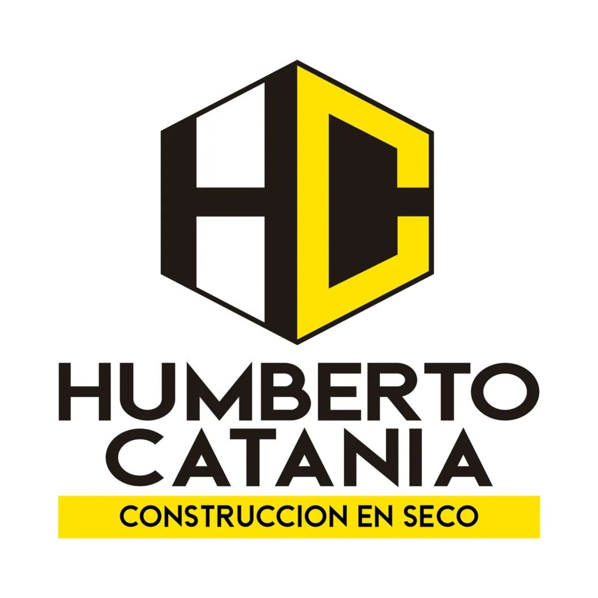

HC Construcción en Seco
Local dedicado a la venta de materiales y soluciones para proyectos de construcción en seco.
Te ayudamos a encontrar los materiales que necesitás para llevar adelante tu proyecto.
📍 Sáenz Peña N.º 1351, Tunuyán, Mendoza.

Materiales y soluciones para construcción en seco. Calidad, atención y asesoramiento para tus proyectos.
Conocé Humberto Catania
Local dedicado a la venta de materiales y soluciones para proyectos de construcción en seco.
Te ayudamos a encontrar los materiales que necesitás para llevar adelante tu proyecto.
📍 Sáenz Peña N.º 1351, Tunuyán, Mendoza.
Materiales y soluciones para tus proyectos
Soluciones y materiales para proyectos de construcción en seco.
Venta de materiales para construcción y proyectos de obra.
Materiales y soluciones para mejorar el aislamiento de tus proyectos.
Estamos para ayudarte con tu proyecto.
Sáenz Peña N.º 1351
Tunuyán, Mendoza